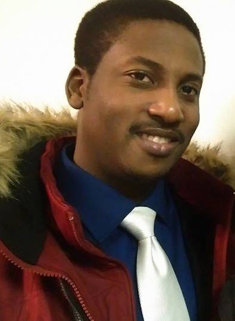

About Me

Man of many talents and a strong attention to detail I am on a journey to make the world a better place, one thought at a time. Never backing down from hard and challenging assignments I work to better myself so that I can be the ultimate problem solver. The world has many problems and though life is short I would like to solve them all as best I can with the skills I have gained through life.
It gives me great joy to encounter a hard problem and eventually show it who is boss and that makes me a bit unrelenting in my quest to solve a problem. However, just solving a problem isnt enough for me. I constantly think about my past solutions to determine if there was, or now is, a better or more efficient way to handle that problem. Some may say the problem is solved, its not perfect but we will move on; I do not share this mindset and given enough time will try to perfect it.
All work and no play makes Jack a dull boy, and so some play time is in oder. Aside from working hard I play video games to rest my mind but also keep it sharp with strategy and fast decision making games.
No matter whether its a game problem or a life problem I always end up solving it and keep it moving.